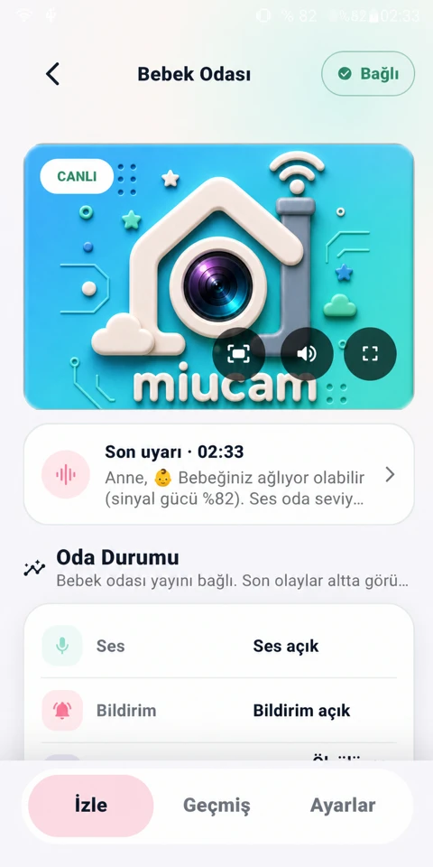
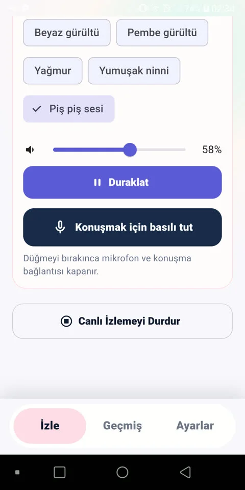
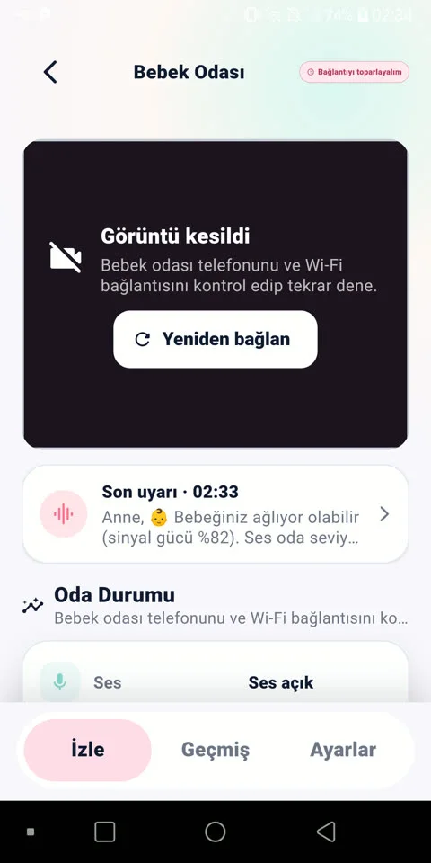

Ev içinde sade takip istiyorsan
- Kullanabileceğin iki telefon ve güvenilir bir ev Wi-Fi ağı varsa
- Yeni bir kamera almak yerine mevcut cihazını değerlendirmek istiyorsan
- Hesap açmadan, temel medyayı buluta göndermeden takip etmek istiyorsan
Kullanmadığın telefonu bebek odasına bırak; kendi telefonundan canlı görüntüyü ve oda sesini takip et. Temel kamera ve mikrofon medyası ev ağında kalır.
Ev Wi-Fi’ında çalışır · Ev dışından izleme sunmaz · Oda telefonu olarak Android daha esnektir
Mağaza sürümü hazırlanıyor

En iyi deneyim, ihtiyacın ürünün sınırlarıyla örtüştüğünde başlar.
Her iki telefonda da aynı uygulama; yalnızca roller farklı.
Kullanmadığın telefonu MiuCam’de Bebek Odası rolüne geçir ve güvenli bir konuma yerleştir.
Ebeveyn telefonunda QR kodu okut. İstersen yerel ağ keşfi veya manuel IP ile de bağlan.
Canlı görüntü, oda sesi, bağlantı durumu ve olay uyarıları ebeveyn ekranında bir arada.
Bağlantı durumundan oda kontrollerine kadar en önemli bilgi her zaman göz hizasında.
Ekran görüntüleri Türkçe örneklerden gösterilir; uygulama arayüzü 8 dili destekler.


Diğer ekranları görmek için yatay kaydır →
MiuCam bağlantıyı görünür tutar, önemli anları öne çıkarır ve gereksiz karmaşayı geride bırakır.
Canlı görüntü ve oda sesiyle aynı yerel ağ içinde bebeğinin odasına göz kulak ol.
Ağlama benzeri ses, yüksek ses, hareket ve ışık değişimi olaylarını gör; uyarı geçmişinden geriye dön.
Sesini odaya ilet; beyaz veya pembe gürültü, yağmur, ninni ve piş-piş seslerini uzaktan yönet.
Ağ zorlandığında ses öncelikli moda geçebilir; bağlantı koptuğunda durumu gösterir ve kontrollü biçimde yeniden dener.
MiuCam’in temel izleme akışı, eşleştirdiğin iki cihaz arasında aynı erişilebilir yerel ağda çalışır. Kamera ve mikrofon medyası temel kullanımda bir MiuCam bulut sunucusuna aktarılmaz.
Şeffaf güvenlik notu: Yerel medya aktarımı şu anda HTTP/WebSocket üzerinden çalışır; TLS veya uçtan uca şifreleme iddiası yoktur. MiuCam’i yalnızca güvendiğin, erişimi kontrollü bir Wi-Fi ağında kullan.
Rolleri cihazlarına göre seç. Her oda telefonunda izleme veya bildirim takibi için toplam 2 saat ücretsiz kullanım; sonrasında tek seferlik satın almayla ömür boyu kullanım.
Android 7.0 ve üzeri
iOS 13 veya üzeri yüklü iPhone’lar
Türkçe, İngilizce, Çince, Hintçe, İspanyolca, Fransızca, Almanca ve Arapça.
MiuCam’in ne yaptığını ve sınırlarını kurmadan önce bil.
Mağaza bağlantıları hazır olduğunda burada olacak. O zamana kadar nasıl çalıştığını inceleyebilir ve yayın ilerlemesini takip edebilirsin.